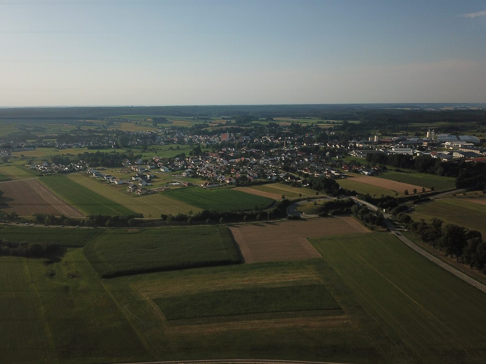

독일 치메츠하우젠 풍력 14기, 투자사는 '30년 최대 2,300만 유로' 계산서…시장은 반대, 가구당 전기 할인은 연 45유로

가동 첫 15년은 영업세 거의 없고 토지 임대료는 사유지 주인 몫…법정 분담금 연 약 28만2,000유로는 마을이 내는 군 분담금 240만 유로의 10분의 1 남짓
독일 바이에른주 귄츠부르크군의 장터마을 치메츠하우젠(Ziemetshausen)에 풍력발전기 14기를 세우려는 투자사 알투스(Altus)가 주민설명회에서 마을이 30년 동안 최소 1,000만 유로에 영업세 약 1,300만 유로를 더해 최대 2,300만 유로를 거둘 수 있다는 자체 계산을 내놓았지만, 랄프 베첼 시장(CSU)과 에르빈 레더 제2시장은 반대 입장을 밝히며 계산 자체에 의문을 던졌다. 알투스도 감가상각 때문에 가동 첫 15년 동안은 영업세가 거의 없을 것이라고 인정했고, 운영사가 바뀌면 감가상각이 처음부터 다시 시작될 수 있는 데다 운영사 본사가 마을에 등록돼야 세금이 들어온다는 조건도 붙는다. 발전기 한 기당 연 최소 5만 유로로 잡은 토지 임대료는 땅 주인에게 가는데, 예정 부지 대부분은 약 15년 전 땅을 사들인 SAP 공동창업자 한 사람의 후손 소유이고 마을 땅은 발전기가 많아야 1기 들어갈 작은 필지 하나뿐이다. 재생에너지법(EEG)상 kWh당 0.2센트와 바이에른 참여법상 0.1센트를 합친 법정 지자체 분담금은 발전기 주변 반경의 45.5%가 마을 땅이라 연 약 28만2,000유로로 계산됐는데, 이는 마을이 해마다 내는 군 분담금 240만 유로의 10분의 1 남짓이며 이웃 랑엔노이프나흐(13.2%)는 약 8만2,000유로, 뮌스터하우젠(11.5%)은 약 7만2,000유로로 계산됐다. 마을은 2029년까지 종일학교 개조와 하수처리장 정비 등에 약 1,560만 유로를 투자할 계획이고 올봄 예산 때 부채 130만 유로가 다시 생겨 단기 차입 한도를 150만 유로에서 300만 유로로 늘렸지만, 분담금을 kWh당 0.3센트로 올리는 연방 EEG 개정안은 아직 정부 초안이어서 실제 계약이 어떻게 짜일지는 정해지지 않았다. 알투스는 주민 할인 전기인 '녹색전기 보너스'와 주민 대상 고정 이자 저축증서도 내놓았으나, 시청 계산으로 전기 할인은 가구당 연 약 45유로에 그쳐 설명회에 온 주민들을 실망시켰다.
시민에너지 관점
바람이 부는 곳은 마을인데, 30년 계산서에서 가장 확실한 돈인 토지 임대료는 발전기 한 기당 연 최소 5만 유로씩 외지 땅 주인에게 가고 주민 한 가구에 돌아오는 몫은 연 45유로라는 숫자가 이 사업의 구조를 그대로 보여 준다. 영업세가 있으니 마을도 충분히 번다는 반론이 나올 수 있지만, 투자사 스스로 첫 15년은 영업세가 거의 없다고 인정했고 운영사가 바뀌면 그마저 더 뒤로 밀릴 수 있다. 주민이 할인과 저축증서를 받는 손님이 아니라 발전기의 주인으로 들어가야 수익이 마을 밖으로 빠져나가지 않는다. 국내에서도 대형 풍력 인허가에 앞서 주민 몫을 할인이나 지원금이 아니라 지분으로 정하는 기준부터 세워야 한다.
출처: Augsburger Allgemeine 2026-10-31 Oliver Wolff 원문 보기
창간 전 시험 발행 기사입니다.
独ツィーメッツハウゼンの風車14基、投資会社は「30年で最大2,300万ユーロ」と試算…町長は反対、世帯あたりの電気割引は年45ユーロ
稼働後15年間は営業税がほぼなく、土地賃料は私有地の所有者へ…法定の自治体分担金年約28万2,000ユーロは町が納める郡分担金240万ユーロの10分の1余り
ドイツ・バイエルン州ギュンツブルク郡のマルクト（町）ツィーメッツハウゼン（Ziemetshausen）に風力発電機14基を建てようとしている投資会社アルトゥス（Altus）が、住民説明会で、町は30年間に最低1,000万ユーロと営業税約1,300万ユーロを合わせて最大2,300万ユーロを得られるとする独自の試算を示したが、ラルフ・ヴェッツェル町長（CSU）とエルヴィン・レーダー第2町長は反対の立場を示し、試算そのものに疑問を投げかけた。アルトゥス自身も減価償却のため稼働後15年間は営業税がほとんど生じないと認めており、運営会社が替われば減価償却が最初からやり直しになる可能性があるうえ、運営会社の本社が町に登記されなければ税収は入らないという条件も付く。風車1基あたり年最低5万ユーロと見込んだ土地賃料は土地所有者に入るが、予定地の大部分は約15年前に土地を買い取ったSAP共同創業者の一人の子孫が所有しており、町の土地は風車が多くても1基しか入らない小さな区画一つだけだ。再生可能エネルギー法（EEG）のkWhあたり0.2セントとバイエルン州参加法の0.1セントを合わせた法定の自治体分担金は、風車周辺の所定半径の45.5%が町の土地であることから年約28万2,000ユーロと試算され、これは町が毎年納める郡分担金240万ユーロの10分の1余りで、隣のランゲンノイフナッハ（13.2%）は約8万2,000ユーロ、ミュンスターハウゼン（11.5%）は約7万2,000ユーロと試算された。町は2029年までに全日制学校への改修や下水処理場の改修などに約1,560万ユーロを投資する計画で、今春の予算編成時に130万ユーロの債務が再び生じ、短期借入枠を150万ユーロから300万ユーロに広げたが、分担金をkWhあたり0.3セントに引き上げる連邦のEEG改正案はまだ政府案の段階で、実際の契約がどう組まれるかは決まっていない。アルトゥスは住民向け割引電力の「グリーン電力ボーナス」と住民向けの固定金利の貯蓄証書も示したが、町役場の計算では電気の割引は1世帯あたり年約45ユーロにとどまり、説明会に来た住民を失望させた。
市民エネルギーの視点
風が吹くのは町なのに、30年の試算書で最も確実なお金である土地賃料は風車1基あたり年最低5万ユーロずつ町外の地主に流れ、住民1世帯に戻る分は年45ユーロという数字が、この事業の構造をそのまま示している。営業税があるから町も十分に稼げるという反論もあり得るが、投資会社自身が最初の15年は営業税がほぼないと認め、運営会社が替わればそれもさらに先送りになりかねない。住民が割引や貯蓄証書を受け取る客ではなく風車の持ち主として加わってこそ、収益が町の外へ流れ出ずに済む。韓国でも大型風力の許認可に先立ち、住民の取り分を割引や支援金ではなく持ち分として定める基準づくりから始めるべきだ。
出典: アウクスブルガー・アルゲマイネ（Augsburger Allgemeine） 2026-10-31 オリバー・ヴォルフ（Oliver Wolff） 原文を読む
創刊前の試験発行記事です。
德国齐梅茨豪森14台风机，投资方算出‘30年最多2,300万欧元’…镇长反对，每户电费优惠一年仅45欧元
投运后头15年几乎没有营业税，土地租金归私人地主…法定地方分成每年约28万2,000欧元，仅相当于该镇缴纳的县分摊款240万欧元的十分之一多
计划在德国巴伐利亚州金茨堡县集镇齐梅茨豪森（Ziemetshausen）建设14台风力发电机的投资公司阿尔图斯（Altus）在居民说明会上提出自己的测算，称该镇30年内可获得至少1,000万欧元，加上约1,300万欧元营业税，最多可达2,300万欧元；但镇长拉尔夫·韦策尔（CSU）和第二镇长埃尔温·雷德表明反对立场，并对测算本身提出质疑。阿尔图斯也承认，由于折旧，投运后头15年几乎不会产生营业税；而且一旦运营公司易手，折旧可能从头开始，运营公司总部还必须登记在该镇，税款才会流入。按每台风机每年至少5万欧元估算的土地租金归土地所有者，而规划用地大部分属于约15年前购地的SAP一位联合创始人的后代，镇里的土地只有一小块，最多只能容纳1台风机。根据《可再生能源法》（EEG）每千瓦时0.2欧分和巴伐利亚州参与法0.1欧分计算的法定地方分成，因风机周边规定半径范围的45.5%位于该镇土地上，测算为每年约28万2,000欧元，仅相当于该镇每年缴纳的县分摊款240万欧元的十分之一多；邻近的朗根诺伊夫纳赫（13.2%）测算约为8万2,000欧元，明斯特豪森（11.5%）约为7万2,000欧元。该镇计划到2029年投资约1,560万欧元用于改建全日制学校和整修污水处理厂等，今年春季编制预算时再次出现130万欧元负债，短期借款额度从150万欧元提高到300万欧元；而把分成提高到每千瓦时0.3欧分的联邦EEG修正案仍只是政府草案，实际合同如何订立尚无定论。阿尔图斯还提出面向居民的优惠电价"绿电奖励"和面向居民的固定利率储蓄凭证，但按镇政府的计算，电费优惠每户每年只有约45欧元，令到场居民失望。
市民能源视角
风吹在镇上，可30年测算中最确定的一笔钱——土地租金——每台风机每年至少5万欧元流向外地地主，而回到每户居民手里的只有每年45欧元，这组数字道出了这个项目的结构。也许有人会说有营业税，镇里也能赚够，但投资方自己承认头15年几乎没有营业税，运营公司一旦易手还可能再往后推。居民只有不再做领取优惠和储蓄凭证的客人，而是作为风机的主人加入，收益才不会流出镇外。韩国也应在大型风电许可之前，先定下标准，把居民的份额定为股份，而不是优惠或补贴。
来源: 奥格斯堡汇报（Augsburger Allgemeine） 2026-10-31 Oliver Wolff 查看原文
本文为创刊前试发行文章。
Investor pitches 'up to 23 million euros over 30 years' for 14 wind turbines in Germany's Ziemetshausen; the mayor is opposed and the household power discount comes to 45 euros a year
Almost no trade tax in the first 15 years of operation and land rent going to private landowners; the statutory municipal levy of about 282,000 euros a year is just over a tenth of the 2.4 million euros the town pays in district levy
Wind investor Altus, which plans 14 turbines around the market town of Ziemetshausen in Günzburg district, Bavaria, presented its own calculation at a residents' information evening showing the town could take in at least 10 million euros plus about 13 million euros in trade tax over 30 years, up to 23 million euros in total, but Mayor Ralf Wetzel (CSU) and Second Mayor Erwin Räder stated their opposition and questioned the figures themselves. Altus itself conceded that, because of depreciation, there would be almost no trade tax in the first 15 years of operation; depreciation may also start over if the wind farm changes hands, and the tax only flows if the operating company registers its seat in the town. Land rent, which Altus put at a minimum of 50,000 euros per turbine per year, goes to the landowners, and most of the planned priority area belongs to the descendants of a co-founder of SAP who bought the land about 15 years ago, while the town owns only one small plot with room for at most a single turbine. The statutory municipal levy, 0.2 cents per kWh under the Renewable Energy Sources Act (EEG) plus 0.1 cents under Bavaria's participation law, was calculated at about 282,000 euros a year for the town because 45.5% of the defined radius around the turbines lies on its land, just over a tenth of the 2.4 million euros it pays each year in district levy, with neighbouring Langenneufnach (13.2%) at about 82,000 euros and Münsterhausen (11.5%) at about 72,000 euros. The town plans to invest about 15.6 million euros by 2029, including converting a former tax office into an all-day school and refurbishing its sewage plant, and had to raise its short-term credit line from 1.5 million to 3 million euros after debt of 1.3 million euros reappeared in this spring's budget, while a federal EEG amendment that would lift the levy to 0.3 cents per kWh is still only a government draft, leaving open how contracts will actually be drawn up. Altus also offered a "green power bonus" of discounted electricity for residents and fixed-interest savings certificates, but by the town hall's calculation the discount comes to about 45 euros per household a year, which left residents at the meeting disappointed.
Citizen Energy View
The wind blows over the town, yet the surest money in the 30-year calculation, the land rent, flows at a minimum of 50,000 euros per turbine a year to an outside landowner, while each household gets 45 euros a year, and those two figures lay bare how the project is built. Some will argue that trade tax will still bring the town plenty, but the investor itself admits there will be almost none for the first 15 years, and a change of operator could push it back further still. Only when residents come in as owners of the turbines, rather than as customers handed discounts and savings certificates, will the returns stay in the town. Korea, too, should set a standard before licensing large wind farms that defines residents' share as equity, not as discounts or subsidies.
Source: Augsburger Allgemeine 2026-10-31 Oliver Wolff Read the original
This article was published during the trial period before launch.